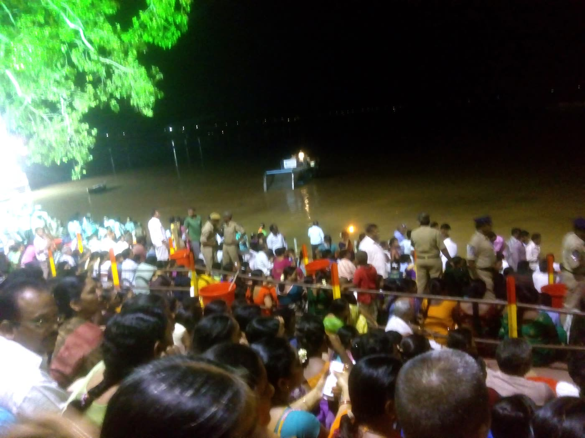
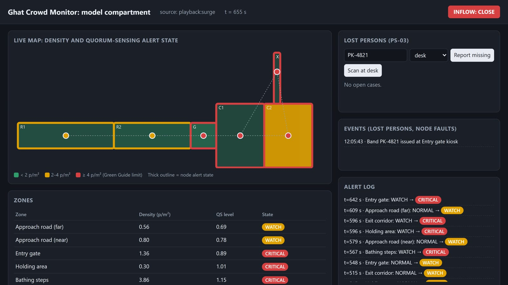

<title>Janavahini Concept Note</title>
<link rel="preconnect" href="https://fonts.googleapis.com">
<link rel="preconnect" href="https://fonts.gstatic.com" crossorigin>
<link rel="stylesheet" href="https://fonts.googleapis.com/css2?family=Archivo:wght@500;600;700;800&family=Source+Sans+3:ital,wght@0,400;0,600;0,700;1,400&family=IBM+Plex+Mono:wght@500&display=swap">
<style>
/* Layout: an A4 concept note. One reading column; each section carries the evaluation criterion it answers. */
:root {
  --paper: #ffffff; --ink: #15202b; --ink2: #3e4a57; --muted: #66717e; --rule: #d9dfe6; --wash: #f0f4f8;
  --river: #1d5b94; --ours: #1f6fbf; --base: #c4561f;
  --ok: #2b8a5a; --watch: #b97f00; --crit: #c13b3b;
  --fill: #fff3b0;
  --display: "Archivo", "Segoe UI", Arial, sans-serif;
  --body: "Source Sans 3", "Segoe UI", Arial, sans-serif;
  --mono: "IBM Plex Mono", Consolas, monospace;
}
@media (prefers-color-scheme: dark) { :root:not([data-theme="light"]) {
  --paper: #11161c; --ink: #e8edf2; --ink2: #c0c8d1; --muted: #8e99a5; --rule: #2a333d; --wash: #18202a;
  --river: #6fa8dc; --ours: #5a9ee6; --base: #e07a46; --ok: #4cb37f; --watch: #e0a52a; --crit: #e06464; --fill: #5a4a00; color-scheme: dark } }
:root[data-theme="dark"] {
  --paper: #11161c; --ink: #e8edf2; --ink2: #c0c8d1; --muted: #8e99a5; --rule: #2a333d; --wash: #18202a;
  --river: #6fa8dc; --ours: #5a9ee6; --base: #e07a46; --ok: #4cb37f; --watch: #e0a52a; --crit: #e06464; --fill: #5a4a00; color-scheme: dark }

@page {
  size: A4; margin: 14mm 15mm 16mm 15mm;
  @bottom-left { content: "Janavahini · Team IIIT Hyderabad · PS-01 concept note · Godavari Pushkaralu 2027"; font: 7.5pt "Source Sans 3", Arial, sans-serif; color: #66717e; }
  @bottom-right { content: "Page " counter(page) " of " counter(pages); font: 7.5pt "Source Sans 3", Arial, sans-serif; color: #66717e; }
}
body { background: var(--paper); color: var(--ink); font: 400 15px/1.5 var(--body); }
.doc { max-width: 820px; margin: 0 auto; padding-block: 32px 48px;
  padding-left: max(16px, env(safe-area-inset-left, 0px)); padding-right: max(16px, env(safe-area-inset-right, 0px)); }
h1, h2, h3 { font-family: var(--display); color: var(--ink); text-wrap: balance; margin: 0; }
h2 { break-inside: avoid; }
h1 { font-size: 30px; line-height: 1.12; font-weight: 800; letter-spacing: -0.01em; }
h2 { font-size: 19px; font-weight: 700; margin-top: 4px; }
h3 { font-size: 15px; font-weight: 700; }
p { margin: 0; }
.eyebrow { font: 600 11px/1.3 var(--display); letter-spacing: 0.09em; text-transform: uppercase; color: var(--river); }
.lede { font-size: 16.5px; color: var(--ink2); }
/* normal flow (not grid) so long sections split cleanly across printed pages */
section { padding-top: 22px; margin-top: 22px; border-top: 1px solid var(--rule); }
section > * + *, .stack > * + * { margin-top: 10px; }
ul, ol { margin: 0; padding-left: 20px; }
li + li { margin-top: 4px; }
strong { font-weight: 700; }
.small { font-size: 12.5px; color: var(--muted); }
.mono { font-family: var(--mono); font-size: 12px; }
.fill { background: var(--fill); padding: 0 3px; border-radius: 2px; }

/* title block */
.titleblock { display: grid; gap: 12px; }
.meta { display: flex; flex-wrap: wrap; gap: 6px 18px; font-size: 13px; color: var(--ink2); }
.meta b { color: var(--ink); font-weight: 600; }

/* key figures */
.figs { break-inside: avoid; display: grid; grid-template-columns: repeat(4, minmax(0, 1fr)); gap: 10px; }
.fig { background: var(--wash); border-radius: 6px; padding: 10px 12px; display: grid; gap: 2px; align-content: start; }
.fig .n { font: 800 25px/1.1 var(--display); color: var(--ours); font-variant-numeric: tabular-nums; }
.fig .t { font-size: 12.5px; line-height: 1.35; color: var(--ink2); }

/* two-column blocks */
.cols { display: grid; grid-template-columns: minmax(0, 1.25fr) minmax(0, 1fr); gap: 18px; align-items: start; }
figure { margin: 0; display: grid; gap: 4px; break-inside: avoid; }
figure img { width: 100%; border-radius: 4px; display: block; }
figcaption { font-size: 11.5px; line-height: 1.35; color: var(--muted); }

/* steps */
.steps { break-inside: avoid; display: grid; grid-template-columns: repeat(2, minmax(0, 1fr)); gap: 10px 18px; }
.step { align-content: start; display: grid; grid-template-columns: 26px minmax(0, 1fr); gap: 2px 8px; break-inside: avoid; }
.step .k { grid-row: span 2; width: 22px; height: 22px; border-radius: 50%; background: var(--ours); color: #fff;
  font: 700 12px/22px var(--display); text-align: center; margin-top: 1px; }
.step p { font-size: 14px; }

/* status chips */
.chips { display: flex; flex-wrap: wrap; gap: 8px; }
.chip { display: inline-flex; align-items: center; gap: 6px; border: 1px solid var(--rule); border-radius: 999px; padding: 3px 10px 3px 6px; font-size: 13px; }
.dot { width: 12px; height: 12px; border-radius: 50%; display: inline-block; }

/* tables */
.tw { overflow-x: auto; }
table { width: 100%; border-collapse: collapse; font-size: 13px; line-height: 1.35; }
tr { break-inside: avoid; }
.eyebrow, h2, h3 { break-after: avoid; }
th, td { text-align: left; vertical-align: top; padding: 5px 8px; border-bottom: 1px solid var(--rule); }
th { font: 600 11.5px/1.3 var(--display); color: var(--ink2); background: var(--wash); }
td.num, th.num { text-align: right; font-variant-numeric: tabular-nums; white-space: nowrap; }
td .good { color: var(--ok); font-weight: 700; }
td .bad { color: var(--crit); font-weight: 700; }
tr.total td { font-weight: 700; border-top: 1.5px solid var(--ink2); }

.diagram svg { width: 100%; height: auto; display: block; }
.diagram text { font-family: var(--body); }

.refs { font-size: 11.5px; line-height: 1.4; color: var(--ink2); }
.refs li + li { margin-top: 2px; }
.refs a { color: var(--river); word-break: break-all; }
a { color: var(--river); }

.pb { break-before: page; }
@media print {
  body { font-size: 13.4px; }
  .doc { max-width: none; padding: 0; }
  h1 { font-size: 27px; }
  h2 { font-size: 17px; }
  section { padding-top: 14px; margin-top: 14px; }
  .lede { font-size: 15px; }
  .fig .n { font-size: 22px; }
}
@media (max-width: 640px) {
  .figs { grid-template-columns: repeat(2, minmax(0, 1fr)); }
  .cols, .steps { grid-template-columns: minmax(0, 1fr); }
  h1 { font-size: 25px; }
}
</style>

<main class="doc">
  <header class="titleblock">
    <div class="eyebrow">Concept note and technical proposal · Problem Statement 1: Real-Time Crowd Monitoring and Congestion Management</div>
    <h1>Janavahini: route-aware crowd alerts that warn the road before the ghat fills</h1>
    <p class="lede">Low-cost counters on every road, gate and junction estimate crowd density, look a minute ahead, and pass warnings back along the pilgrim route to the police who can act, even if the network or the command centre goes down.</p>
    <div class="meta">
      <span><b>Team</b> IIIT Hyderabad: Divya Teja Yekkaluru, Pallamreddy Viswas Reddy</span>
      <span><b>Challenge</b> RTIH × RMC Innovation-Led Solutions for Godavari Pushkaralu 2027</span>
      <span><b>Date</b> November 2026</span>
      <span><b>Demo video</b> submitted with this application (PS01_Janavahini.mp4)</span>
    </div>
    <p class="small"><i>Janavahini</i> (జనవాహిని) means "a river of people": the system keeps the river of pilgrims flowing safely to the Godavari. Companion documents: <b>Technical architecture and workflow</b> · <b>Indicative budget and implementation plan</b> · <b>Demonstration video</b>.</p>
  </header>

  <section>
    <div class="eyebrow">Summary</div>
    <p>A crush at a bathing ghat builds when more people walk in than can leave. The police who can stop it stand on the approach roads, often a kilometre away, and cannot see the ghat filling. We split each road into short <strong>patches</strong> with a counter at every boundary. Each counter knows how many people are in its patch, estimates how full it will be a minute later, and knows which ghats its road leads to. When a ghat is about to cross the safe limit, or already has, the warning travels <strong>backwards along the route</strong>, counter to counter, until it reaches police who can slow people, hold them, or send them to a ghat with room. Every decision is made on the devices themselves, so alerts keep working when the mobile network or the control room fails; the Integrated Command and Control Centre (ICCC) receives everything through a documented API.</p>
    <div class="figs" role="list">
      <div class="fig" role="listitem"><span class="n">0 s</span><span class="t">above the safe limit in a simulated ghat surge, vs about 14 min with today's thresholds</span></div>
      <div class="fig" role="listitem"><span class="n">5 of 5</span><span class="t">surge runs kept safe with no network at all (today's practice: 0 of 5)</span></div>
      <div class="fig" role="listitem"><span class="n">~3 min</span><span class="t">earlier warning to the road police (172 s); thresholds never warned the road</span></div>
      <div class="fig" role="listitem"><span class="n">20 of 20</span><span class="t">site-wide surge scenarios safe; a cut-off command centre managed 6 of 20</span></div>
    </div>
    <p class="small">All results are from simulation (JuPedSim crowd simulator and a whole-site flow model); see §6. Each section below names the evaluation criterion it answers.</p>
  </section>

  <section>
    <div class="eyebrow">1 · The problem · Problem–solution alignment</div>
    <h2>Danger shows up at the ghat; the people who can prevent it are upstream</h2>
    <div class="cols">
      <div class="stack">
        <p>On the first morning of the 2015 Godavari Pushkaralu, <strong>14 July 2015</strong>, at least <strong>27 pilgrims died</strong> in a crush at Pushkar Ghat, Rajahmundry; most were elderly women [1–3]. Over the 12 days, about <strong>11 crore</strong> people bathed in the Godavari [4]. For 2027 the state expects up to 10 crore pilgrims, and up to <strong>1 crore in a single day</strong>, almost twice the 2015 peak of 58.2 lakh, across 525 ghats [15].</p>
        <ul>
          <li><strong>The physics is simple.</strong> A ghat can release only so many people per minute (bathers on the steps, narrow exits). When inflow exceeds that, density rises. Above about <strong>4 persons/m²</strong> movement breaks down; at 5–6 persons/m², shock waves can knock people over [5–7].</li>
          <li><strong>The timing is the problem.</strong> By the time crowding is visible at the gate, the roads behind it are full and nobody can step back. The police who could stop the inflow are at road heads, junctions and holding areas, out of sight of the ghat.</li>
          <li><strong>Today's tools are late and local.</strong> Hourly CCTV counts and fixed thresholds alarm at the crowded spot itself, and only through the control room. In our simulations, threshold alarms never reached the road police in time (§6).</li>
        </ul>
      </div>
      <figure>
        
        <figcaption>Pilgrims at the river front, Rajahmundry, Godavari Pushkaralu 2015. Photo: విశ్వనాధ్.బి.కె., CC BY-SA 4.0, Wikimedia Commons.</figcaption>
      </figure>
    </div>
  </section>

  <section>
    <div class="eyebrow">2 · Our solution · Innovation and originality</div>
    <h2>Count, look ahead, warn back along the route, act where there is room</h2>
    <div class="steps">
      <div class="step"><span class="k">1</span><h3>Count every patch</h3><p>Each road is split into patches of about 25 m. A counter at each boundary counts people crossing in and out. People in the patch = in − out; <strong>density = people ÷ patch area</strong>. Counters can be camera-free (time-of-flight or thermal beam) or the existing CCTV/AI counts. No faces, no phones, no IDs.</p></div>
      <div class="step"><span class="k">2</span><h3>Look a minute ahead</h3><p>Each counter tracks how fast its patch is filling: <strong>forecast = density now + rate of rise × 60 s</strong>. The rate term is used only once a patch is busy (≥ 1.5 persons/m²), so a normal day raises no false alarms.</p></div>
      <div class="step"><span class="k">3</span><h3>Warn backwards along the route</h3><p>A one-time route map records which road feeds which junction and ghat, and in what share. A ghat forecast to cross the limit, or already over it, sends its warning upstream counter to counter, weighted by the share of each road's flow heading into trouble. <strong>Roads that don't feed the problem stay green.</strong></p></div>
      <div class="step"><span class="k">4</span><h3>Act where there is buffer space</h3><p>Police see a three-colour light. Holds happen far upstream where people can wait safely, not at the crowded gate. At junctions, pilgrims are <strong>sent to a neighbouring ghat with room</strong>, which is the advice officials gave on 14 July 2015, but minutes earlier [2].</p></div>
    </div>
    <div class="chips" aria-label="What the police see">
      <span class="chip"><span class="dot" style="background: var(--ok)"></span><b>Green</b>&nbsp;let people through</span>
      <span class="chip"><span class="dot" style="background: var(--watch)"></span><b>Amber</b>&nbsp;slow the flow, or divert at the junction</span>
      <span class="chip"><span class="dot" style="background: var(--crit)"></span><b>Red</b>&nbsp;hold here</span>
      <span class="small" style="align-self: center">Levels follow the NDMA crowd guide [5].</span>
    </div>

    <figure class="diagram">
      <svg viewBox="0 0 760 270" role="img" aria-labelledby="d1t">
        <title id="d1t">Diagram: a road from town to a junction that splits to Ghat 1 (full) and Ghat 2 (room). Counters on the road look ahead; a warning travels back from Ghat 1 to the junction, which diverts to Ghat 2, and to the road head, where police slow people.</title>
        <!-- river -->
        <rect x="726" y="0" width="34" height="270" fill="var(--river)" opacity="0.18"/>
        <text x="743" y="135" fill="var(--river)" font-size="11" font-weight="700" text-anchor="middle" transform="rotate(90 743 135)">Godavari</text>
        <!-- town -->
        <rect x="8" y="112" width="62" height="48" rx="6" fill="var(--wash)" stroke="var(--rule)"/>
        <text x="39" y="134" fill="var(--ink)" font-size="11.5" font-weight="700" text-anchor="middle">Town /</text>
        <text x="39" y="148" fill="var(--ink)" font-size="11.5" font-weight="700" text-anchor="middle">Nagara</text>
        <!-- main road: 5 patches, tinted by the relayed warning (amber) -->
        <g>
          <rect x="78" y="124" width="76" height="24" fill="var(--watch)" fill-opacity="0.32" stroke="var(--paper)" stroke-width="2"/>
          <rect x="154" y="124" width="76" height="24" fill="var(--watch)" fill-opacity="0.32" stroke="var(--paper)" stroke-width="2"/>
          <rect x="230" y="124" width="76" height="24" fill="var(--watch)" fill-opacity="0.32" stroke="var(--paper)" stroke-width="2"/>
          <rect x="306" y="124" width="76" height="24" fill="var(--watch)" fill-opacity="0.32" stroke="var(--paper)" stroke-width="2"/>
          <rect x="382" y="124" width="76" height="24" fill="var(--watch)" fill-opacity="0.32" stroke="var(--paper)" stroke-width="2"/>
        </g>
        <!-- counters at patch boundaries -->
        <g fill="var(--paper)" stroke="var(--ink)" stroke-width="2">
          <circle cx="78" cy="136" r="5.5"/><circle cx="154" cy="136" r="5.5"/><circle cx="230" cy="136" r="5.5"/>
          <circle cx="306" cy="136" r="5.5"/><circle cx="382" cy="136" r="5.5"/><circle cx="458" cy="136" r="5.5"/>
        </g>
        <!-- branches -->
        <path d="M 458 136 L 600 66" stroke="var(--crit)" stroke-opacity="0.45" stroke-width="22" fill="none"/>
        <path d="M 458 136 L 600 206" stroke="var(--ok)" stroke-opacity="0.35" stroke-width="22" fill="none"/>
        <!-- ghats -->
        <rect x="600" y="36" width="118" height="60" rx="6" fill="var(--crit)" fill-opacity="0.85"/>
        <text x="659" y="62" fill="#fff" font-size="13" font-weight="700" text-anchor="middle">Ghat 1</text>
        <text x="659" y="80" fill="#fff" font-size="11" text-anchor="middle">over the limit</text>
        <rect x="600" y="176" width="118" height="60" rx="6" fill="var(--ok)" fill-opacity="0.9"/>
        <text x="659" y="202" fill="#fff" font-size="13" font-weight="700" text-anchor="middle">Ghat 2</text>
        <text x="659" y="220" fill="#fff" font-size="11" text-anchor="middle">has room</text>
        <!-- forward look-ahead -->
        <defs>
          <marker id="aF" viewBox="0 0 10 10" refX="8" refY="5" markerWidth="7" markerHeight="7" orient="auto"><path d="M0,0 L10,5 L0,10 z" fill="var(--ours)"/></marker>
          <marker id="aB" viewBox="0 0 10 10" refX="8" refY="5" markerWidth="7" markerHeight="7" orient="auto"><path d="M0,0 L10,5 L0,10 z" fill="var(--crit)"/></marker>
        </defs>
        <line x1="90" y1="104" x2="440" y2="104" stroke="var(--ours)" stroke-width="2.5" marker-end="url(#aF)"/>
        <text x="90" y="95" fill="var(--ours)" font-size="11.5" font-weight="700">① count in − out, ② look a minute ahead</text>
        <!-- backward warning -->
        <path d="M 596 92 L 470 160 L 92 160" stroke="var(--crit)" stroke-width="2.5" stroke-dasharray="7 5" fill="none" marker-end="url(#aB)"/>
        <text x="200" y="178" fill="var(--crit)" font-size="11.5" font-weight="700">③ warning passed back, counter to counter</text>
        <!-- police and actions -->
        <g>
          <circle cx="40" cy="196" r="7" fill="var(--ours)"/><rect x="33" y="204" width="14" height="18" rx="5" fill="var(--ours)"/>
          <rect x="4" y="228" width="98" height="22" rx="11" fill="var(--watch)"/>
          <text x="53" y="243" fill="#111" font-size="11.5" font-weight="700" text-anchor="middle">Slow / hold</text>
          <text x="112" y="243" fill="var(--ink2)" font-size="11">④ police at the road head</text>
        </g>
        <g>
          <circle cx="470" cy="196" r="7" fill="var(--ours)"/><rect x="463" y="204" width="14" height="18" rx="5" fill="var(--ours)"/>
          <rect x="420" y="228" width="128" height="22" rx="11" fill="var(--watch)"/>
          <text x="484" y="243" fill="#111" font-size="11.5" font-weight="700" text-anchor="middle">Go to Ghat 2 →</text>
          <text x="420" y="264" fill="var(--ink2)" font-size="11">④ junction diverts</text>
        </g>
      </svg>
      <figcaption>Figure 1. How one alert travels. Each box on the road is one patch; the dots are counters. Ghat 1 is over the limit; its warning reaches the junction, which sends pilgrims to Ghat 2, and the road head, where police slow the inflow. Illustration.</figcaption>
    </figure>

    <ul>
      <li><strong>Works without the network.</strong> Counters talk to their neighbours over a low-cost radio mesh (ESP-NOW for short hops, LoRa for long ones). Mass gatherings are exactly when mobile networks overload.</li>
      <li><strong>"Unknown is not safe."</strong> If a board goes silent, its neighbours keep its last warning, listen one hop further, and tell staff which board to check.</li>
      <li><strong>Makes the ICCC stronger, does not replace it.</strong> When the network is up, each node follows the stronger of the ICCC's command and its own. When the network fails, the mesh carries on.</li>
    </ul>
    <h3>What is innovative or distinctive</h3>
    <ol>
      <li><strong>Alerts follow the pilgrim route</strong> (a directed route graph with flow shares), not just the crowded spot, so the warning reaches police who can act about 3 minutes before danger. Earlier designs we tested, averaging and hop-based relays, warned too late or held unrelated roads (§6).</li>
      <li><strong>Decided on the devices</strong> over an ESP-NOW/LoRa mesh: works when mobile networks or the ICCC fail, exactly when mass gatherings overload them.</li>
      <li><strong>"Unknown is not safe":</strong> a dead node's neighbours keep its warning and flag staff.</li>
      <li><strong>Hybrid:</strong> the ICCC can only add caution, never remove it.</li>
      <li><strong>Camera-free,</strong> no personal data.</li>
      <li><strong>The firmware logic tested in simulation is the deployed code.</strong></li>
    </ol>
  </section>

  <section>
    <div class="eyebrow">3 · Technical architecture · Technical feasibility, scalability and cybersecurity</div>
    <h2>Decisions on the devices; the command centre oversees but is never required</h2>
    <figure class="diagram">
      <svg viewBox="0 0 760 200" role="img" aria-labelledby="a1t">
        <title id="a1t">Architecture: counters feed ESP32 nodes, which talk over a radio mesh; a gateway passes their state to the command-centre server, which serves the RMC ICCC dashboards and can send commands back.</title>
        <defs><marker id="aA" viewBox="0 0 10 10" refX="8" refY="5" markerWidth="6" markerHeight="6" orient="auto-start-reverse"><path d="M0,0 L10,5 L0,10 z" fill="var(--ink2)"/></marker></defs>
        <g font-size="10.5" fill="var(--ink2)">
          <rect x="2" y="20" width="140" height="112" rx="8" fill="var(--wash)" stroke="var(--rule)"/>
          <text x="72" y="42" text-anchor="middle" font-size="12.5" font-weight="700" fill="var(--ink)">Counters</text>
          <text x="72" y="64" text-anchor="middle">camera-free line counter</text>
          <text x="72" y="80" text-anchor="middle">at each patch boundary,</text>
          <text x="72" y="96" text-anchor="middle">or CCTV/AI counts</text>
          <rect x="157" y="20" width="140" height="112" rx="8" fill="var(--wash)" stroke="var(--ours)" stroke-width="1.5"/>
          <text x="227" y="42" text-anchor="middle" font-size="12.5" font-weight="700" fill="var(--ink)">Node (ESP32)</text>
          <text x="227" y="64" text-anchor="middle">density, 1-min forecast</text>
          <text x="227" y="80" text-anchor="middle">route-aware warning</text>
          <text x="227" y="96" text-anchor="middle">dead-node handling</text>
          <text x="227" y="112" text-anchor="middle">3-colour signal</text>
          <rect x="312" y="20" width="140" height="112" rx="8" fill="var(--wash)" stroke="var(--rule)"/>
          <text x="382" y="42" text-anchor="middle" font-size="12.5" font-weight="700" fill="var(--ink)">Radio mesh</text>
          <text x="382" y="64" text-anchor="middle">ESP-NOW, short hops</text>
          <text x="382" y="80" text-anchor="middle">LoRa, long hops</text>
          <text x="382" y="96" text-anchor="middle">no internet needed</text>
          <rect x="467" y="20" width="140" height="112" rx="8" fill="var(--wash)" stroke="var(--rule)"/>
          <text x="537" y="42" text-anchor="middle" font-size="12.5" font-weight="700" fill="var(--ink)">Server (FastAPI)</text>
          <text x="537" y="64" text-anchor="middle">REST API + OpenAPI docs</text>
          <text x="537" y="80" text-anchor="middle">live WebSocket feed</text>
          <text x="537" y="96" text-anchor="middle">alert and node log</text>
          <rect x="622" y="20" width="136" height="112" rx="8" fill="var(--wash)" stroke="var(--rule)"/>
          <text x="690" y="42" text-anchor="middle" font-size="12.5" font-weight="700" fill="var(--ink)">RMC ICCC</text>
          <text x="690" y="64" text-anchor="middle">dashboards</text>
          <text x="690" y="80" text-anchor="middle">state systems (RTGS)</text>
          <text x="690" y="96" text-anchor="middle">commands back</text>
          <text x="690" y="112" text-anchor="middle">(hybrid mode)</text>
        </g>
        <g stroke="var(--ink2)" stroke-width="1.6" fill="none">
          <line x1="143" y1="76" x2="155" y2="76" marker-end="url(#aA)"/>
          <line x1="299" y1="76" x2="310" y2="76" marker-start="url(#aA)" marker-end="url(#aA)"/>
          <line x1="454" y1="76" x2="465" y2="76" marker-start="url(#aA)" marker-end="url(#aA)"/>
          <line x1="609" y1="76" x2="620" y2="76" marker-start="url(#aA)" marker-end="url(#aA)"/>
        </g>
        <rect x="157" y="146" width="295" height="40" rx="8" fill="var(--ours)" fill-opacity="0.12"/>
        <text x="304" y="163" text-anchor="middle" font-size="11" font-weight="700" fill="var(--ours)">Alert path: works with the server and</text>
        <text x="304" y="178" text-anchor="middle" font-size="11" font-weight="700" fill="var(--ours)">network switched off</text>
        <rect x="467" y="146" width="291" height="40" rx="8" fill="var(--wash)"/>
        <text x="612" y="163" text-anchor="middle" font-size="11" fill="var(--ink2)">Oversight path: a gateway node passes</text>
        <text x="612" y="178" text-anchor="middle" font-size="11" fill="var(--ink2)">every node's state to the server</text>
      </svg>
      <figcaption>Figure 2. System architecture. Each node takes the stronger of its own decision and the ICCC's command, so the ICCC can only add caution.</figcaption>
    </figure>
    <div class="tw">
      <table>
        <thead><tr><th style="width: 15%">Layer</th><th>Technology</th><th style="width: 30%">Status</th></tr></thead>
        <tbody>
          <tr><td>Counting</td><td>A pair of time-of-flight sensors (VL53L1X) per boundary gives direction; or density from existing CCTV/AI counts through the API</td><td>Simulated in the prototype; sensors are an add-on</td></tr>
          <tr><td>Node</td><td>ESP32 firmware (C++, PlatformIO); the alert logic is one header shared with the simulator, so the tested code is the deployed code</td><td>Complete; 244 virtual boards tested; not yet flashed</td></tr>
          <tr><td>Network</td><td>ESP-NOW 25-byte messages once a second (0.7% channel load with 10 boards in range); LoRa SF7 for long hops, sent on change</td><td>ESP-NOW done; LoRa stubbed until modules arrive</td></tr>
          <tr><td>Server</td><td>Python FastAPI; REST with OpenAPI documentation; WebSocket; playback, serial and hardware-in-the-loop modes</td><td>Done; end-to-end tests pass</td></tr>
          <tr><td>Dashboard</td><td>Browser app: zone map, alert log, inflow command, node-down reports with operator clear-down</td><td>Done</td></tr>
        </tbody>
      </table>
    </div>
    <p class="small">The full architecture and the step-by-step alert workflow are in the companion document <b>Technical architecture and workflow</b>.</p>
  </section>

  <section>
    <div class="eyebrow">4 · Hardware, software and infrastructure · Integration requirements</div>
    <h2>Off-the-shelf parts, open-source software, four integration points</h2>
    <div class="tw">
      <table>
        <thead><tr><th style="width: 18%">Item</th><th>Requirement</th></tr></thead>
        <tbody>
          <tr><td>Hardware per node</td><td>ESP32 board with LoRa (SX1276); two VL53L1X time-of-flight sensors (not needed where CCTV counts exist); IP65 three-colour signal tower; IP65 enclosure; mains adapter with backup battery.</td></tr>
          <tr><td>Quantity</td><td>About <strong>250 nodes</strong> for the full site (68 compartments, 20 junctions, 10 Nagaras); <strong>10–15</strong> for the pilot. Gateway node(s) connect to the server over USB/serial.</td></tr>
          <tr><td>Software</td><td>Open-source ESP32 firmware, FastAPI backend and web dashboard; runs on one server or VM at the ICCC.</td></tr>
          <tr><td>Infrastructure</td><td>Power and mounting points at gates, roads and junctions; barricades narrowing gates to single or double file for accurate counting.</td></tr>
          <tr><td>Integration</td><td>(a) Read crowd counts from existing CCTV/AI analytics. (b) Push node states, alerts and node-down events to ICCC dashboards and RTGS via a documented REST/WebSocket API. (c) Accept ICCC inflow commands. (d) Staff messages in Telugu and English.</td></tr>
        </tbody>
      </table>
    </div>
  </section>

  <section>
    <div class="eyebrow">5 · Data requirements and security measures · Cybersecurity</div>
    <h2>Counts only: nothing personal is collected</h2>
    <ul>
      <li><strong>Data collected:</strong> only counts and densities per patch, node health and alert logs. No images leave the sensor; no faces, phones or personal data.</li>
      <li><strong>Data needed from RMC:</strong> model-compartment layout, pedestrian routes, ghat capacities and the CCTV count feed.</li>
      <li><strong>Built in:</strong> dead-node detection with one staff alert per outage; holds released only by an operator after checking a silent node.</li>
      <li><strong>Security for the pilot:</strong> authenticated node messages so a spoofed radio cannot raise or clear alerts; TLS on all API traffic; API keys and role-based access for ICCC operators; an audit log of every command; hosting in the RMC or state data centre following CERT-In guidelines.</li>
    </ul>
  </section>

  <section class="pb">
    <div class="eyebrow">6 · Evidence and expected impact · Technical feasibility and impact</div>
    <h2>Tested in a recognised crowd simulator, at whole-site scale, and against the device code</h2>
    <div class="tw">
      <table>
        <thead><tr><th>Test</th><th>Today's practice</th><th>Our system</th></tr></thead>
        <tbody>
          <tr><td>Ghat surge in the JuPedSim crowd simulator, 5 runs: runs kept below 4 persons/m²</td><td><span class="bad">0 of 5</span>; peak 6.0, about 14 min above the limit</td><td><span class="good">5 of 5</span>; peak 3.3, 0 s above, with 30% radio loss and no network</td></tr>
          <tr><td>Same surge, command centre network cut mid-surge</td><td><span class="bad">0 of 5</span></td><td><span class="good">5 of 5</span> (hybrid; peak 3.1)</td></tr>
          <tr><td>Warning reaches the road police</td><td>never</td><td><strong>172 s</strong> before the danger point</td></tr>
          <tr><td>Whole site: 68 compartments, 20 junctions, 10 Nagaras; 20 random surge scenarios</td><td>6 of 20 safe (a cut-off command centre: also 6 of 20)</td><td><span class="good">20 of 20</span></td></tr>
          <tr><td>Whole site: 20 blocked-exit scenarios</td><td>12 of 20 safe</td><td><span class="good">20 of 20</span>; peak 2.3 vs 2.8 for a command centre, with 4× fewer holds because it diverts</td></tr>
          <tr><td>A dead board at the gate</td><td>first design: about 13 min above the limit</td><td>final firmware: <strong>0 s</strong>; also safe with 5% of all boards dead at random</td></tr>
          <tr><td>A normal day</td><td>–</td><td><strong>0</strong> false alerts</td></tr>
          <tr><td>Device code vs design model: 244 virtual ESP32 boards, 30% message loss</td><td>–</td><td><strong>100%</strong> identical decisions over 1.8 million board-seconds</td></tr>
          <tr><td>One-equation model of a filling ghat, not fitted to the test runs</td><td>–</td><td>danger predicted at <strong>670 s</strong>; simulator measured 672 s</td></tr>
        </tbody>
      </table>
    </div>
    <p class="small">The simulator is JuPedSim (Forschungszentrum Jülich, open source) [8]. Our model passes the RiMEA verification tests 1, 4 and 12 [9] and is calibrated to Weidmann's walking-speed data [10]; every compartment result is repeated over 5 random seeds. The full method, every experiment (including what failed) and the reproduction steps are in our technical report, available on request.</p>
    <h3>Expected impact during Godavari Pushkaralu 2027</h3>
    <p>For 2027's up to <strong>1 crore pilgrims a day</strong>, this means:</p>
    <ul>
      <li><strong>Early holds upstream</strong>, where people can wait safely, instead of at the crowded gate;</li>
      <li><strong>Diversion to ghats with room</strong> instead of closures, with <strong>4× fewer holds</strong>;</li>
      <li><strong>Zero false alerts</strong> on a normal day;</li>
      <li>A <strong>live density picture</strong> for the ICCC.</li>
    </ul>
  </section>

  <section>
    <div class="eyebrow">7 · Prototype · Implementation readiness</div>
    <h2>Working software, device firmware and a live demo</h2>
    <div class="tw">
      <table>
        <thead><tr><th>Part</th><th>Status</th></tr></thead>
        <tbody>
          <tr><td>ESP32 firmware (counter node, gateway, band tag)</td><td>Complete; compiles; uses 22% of RAM. Runs the route alerts and dead-board handling. Tested as 244 virtual boards; <strong>not yet flashed and field-tested</strong>.</td></tr>
          <tr><td>Command-centre backend</td><td>FastAPI service with a documented REST API (OpenAPI at <span class="mono">/docs</span>) and a live WebSocket feed; end-to-end tests pass.</td></tr>
          <tr><td>Dashboard</td><td>Live map of every zone coloured by density and alert, alert log with times, inflow command, dead-node reports.</td></tr>
          <tr><td>Demo (12 Nov)</td><td>A simulated surge drives real boards. We switch off the server and the road node still turns amber over the mesh; we unplug a node and the road keeps holding, while the dashboard shows "NODE DOWN – send staff".</td></tr>
        </tbody>
      </table>
    </div>
    <figure>
      
      <figcaption>Figure 3. Our prototype dashboard replaying a simulated surge. The warning has reached the approach road (amber) before the bathing steps pass the limit; the alert log records each change with its time, and the inflow command to the road is CLOSE.</figcaption>
    </figure>
  </section>

  <section>
    <div class="eyebrow">8 · Scalability and sustainability · Fit with Pushkaralu requirements</div>
    <h2>Add a ghat by adding nodes and edges; reuse every node after the event</h2>
    <ul>
      <li><strong>Scales without retraining.</strong> Adding a ghat means adding nodes and edges to the route map. Tested on a route graph of 68 compartments, 20 junctions and 10 Nagaras (244 virtual boards, 30% radio loss); radio load is 0.7% with 10 boards in range.</li>
      <li><strong>No central bottleneck.</strong> Decisions are local, so cost grows linearly with the number of nodes.</li>
      <li><strong>Sustainable.</strong> Hardware is low-cost (₹4,400–7,500 per node), off-the-shelf and repairable locally; software is open-source with no licence fees.</li>
      <li><strong>Reused after Pushkaralu.</strong> The same nodes serve Maha Shivaratri, Dasara, temple queues, bus stands and railway stations, and the approach transfers to other mass gatherings such as Krishna Pushkaralu.</li>
    </ul>
    <div class="tw">
      <table>
        <thead><tr><th style="width: 26%">Requirement (challenge §4, §10)</th><th>How the design meets it</th></tr></thead>
        <tbody>
          <tr><td>High footfall, time-sensitive</td><td>Designed for 4+ persons/m²; 1-second decision loop; warns minutes before the limit.</td></tr>
          <tr><td>Usable by field personnel</td><td>Three colours, three actions (let through, slow or divert, hold). Police need no phone or app.</td></tr>
          <tr><td>Multilingual access</td><td>Colour signals need no language; dashboard and staff messages to be provided in Telugu and English for the pilot.</td></tr>
          <tr><td>Reliability on site</td><td>Decisions stay local; tested with 30–50% radio message loss, network cuts and dead boards.</td></tr>
          <tr><td>Privacy and cybersecurity</td><td>Counts only: no faces, no facial recognition, no personal data. Planned for the pilot: authenticated node messages and role-based access to the API.</td></tr>
          <tr><td>Interoperability</td><td>Takes density from any source, including existing CCTV/AI counts. Documented REST API to the RMC ICCC.</td></tr>
          <tr><td>Scale</td><td>Tested on a route graph of 68 compartments, 20 junctions and 10 Nagaras (244 boards). Adding a ghat means adding nodes and edges to the route map.</td></tr>
          <tr><td>Post-event use</td><td>Same nodes for Maha Shivaratri, Dasara and other festivals, temple queues, bus-stand and railway-station crowds.</td></tr>
        </tbody>
      </table>
    </div>
  </section>

  <section>
    <div class="eyebrow">9 · Implementation plan (aligned with challenge §11) · details in the companion budget and plan</div>
    <div class="tw">
      <table>
        <thead><tr><th style="width: 22%">When</th><th>What</th><th style="width: 32%">Measured</th></tr></thead>
        <tbody>
          <tr><td>Nov 2026 – Jan 2027</td><td>Map routes for the Kotilingala model compartment; install counters and nodes; connect CCTV counts and the ICCC</td><td>Counting accuracy vs manual counts</td></tr>
          <tr><td>Feb – Mar 2027</td><td><strong>Live pilot at Maha Shivaratri</strong></td><td>Warning lead time, false alerts per day, radio delivery rate, node uptime</td></tr>
          <tr><td>Mar – Jun 2027</td><td>Scale to 68 compartments, 20 junctions, 10 Nagaras; police drills</td><td>Drill response times</td></tr>
          <tr><td>Jun – Jul 2027</td><td>12-day operation from the ICCC</td><td>Live KPIs, incident log</td></tr>
        </tbody>
      </table>
    </div>
  </section>

  <section>
    <div class="eyebrow">10 · Indicative cost estimate · Cost-effectiveness</div>
    <div class="cols" style="break-inside: avoid">
      <div class="tw">
        <table>
          <thead><tr><th>One counter node</th><th class="num">₹ (retail)</th></tr></thead>
          <tbody>
            <tr><td>ESP32 board with LoRa radio (SX1276) [11]</td><td class="num">1,650</td></tr>
            <tr><td>Two time-of-flight counting sensors (VL53L1X) [12]; ₹0 where CCTV counts exist</td><td class="num">960 – 1,980</td></tr>
            <tr><td>Three-colour IP65 signal tower [13]</td><td class="num">630 – 1,560</td></tr>
            <tr><td>IP65 enclosure [14]</td><td class="num">110 – 300</td></tr>
            <tr><td>Power: mains adapter + backup battery (our estimate)</td><td class="num">1,000 – 2,000</td></tr>
            <tr class="total"><td>Per node</td><td class="num">≈ 4,400 – 7,500</td></tr>
          </tbody>
        </table>
      </div>
      <div class="stack">
        <p><strong>Pilot</strong> (one model compartment, 10–15 nodes): about <strong>₹0.5–1.1 lakh</strong> of hardware.</p>
        <p><strong>Full site</strong> (about 250 nodes, as in our site model): about <strong>₹11–19 lakh</strong> of hardware, before installation, 10% spares and maintenance.</p>
        <p><strong>Software</strong> is open-source and runs on one server or VM at the ICCC.</p>
        <p class="small">Indicative only: unit prices are public retail listings (November 2026) before GST and bulk discounts, and will be replaced by vendor quotes. Nodes are reused after the event.</p>
      </div>
    </div>
  </section>

  <section>
    <div class="eyebrow">11 · Limitations and risks</div>
    <ul>
      <li><strong>All results so far are from simulation.</strong> The compartment layout is assumed until we receive the Kotilingala model-compartment plans.</li>
      <li>A command centre with a working network is slightly better on a surge (peak 2.9 vs 3.3 persons/m²); that is why we propose the hybrid.</li>
      <li>Two neighbouring boards failing together (gate and junction) can leave a gap in 2 of 5 tests; the ICCC covers that case when the network is up.</li>
      <li>In about 1 in 4 near-miss scenarios, where the crowd rose fast but stopped short of danger, the system slowed the flow as a precaution.</li>
      <li>Counters need gates narrowed to single or double file, which barricades already do at most ghats. Nodes need a power, weather, theft and maintenance plan, which is part of the pilot design.</li>
    </ul>
  </section>

  <section>
    <div class="eyebrow">12 · Support required from the organisers and government stakeholders</div>
    <ol>
      <li>Kotilingala model-compartment layout, planned pedestrian routes and ghat capacities, to build the route map.</li>
      <li>Access to existing CCTV crowd-count feeds and the ICCC/RTGS integration interface.</li>
      <li>Permission and police coordination for a live pilot at Maha Shivaratri (Feb–Mar 2027), including mounting points and power at gates and junctions.</li>
      <li>Police and volunteer time for drills on the three-colour protocol.</li>
      <li>A server or VM in the RMC or state data centre.</li>
      <li>Procurement support for about 250 nodes.</li>
    </ol>
  </section>

  <section>
    <div class="eyebrow">13 · Team</div>
    <p><strong>Team IIIT Hyderabad</strong></p>
    <ul>
      <li><strong>Divya Teja Yekkaluru</strong> · <a href="mailto:divyatejayekkaluru@gmail.com">divyatejayekkaluru@gmail.com</a></li>
      <li><strong>Pallamreddy Viswas Reddy</strong> · <a href="mailto:pallamreddy.viswas@gmail.com">pallamreddy.viswas@gmail.com</a></li>
    </ul>
    <p class="small">Also submitted: PS-03 lost-person reunification, which reuses the same nodes.</p>
  </section>

  <section class="refs">
    <div class="eyebrow">References</div>
    <ol>
      <li>Al Jazeera, "Deaths at India religious festival stampede", 14 Jul 2015. <a href="https://www.aljazeera.com/news/2015/7/14/deaths-at-india-religious-festival-stampede">aljazeera.com/news/2015/7/14/deaths-at-india-religious-festival-stampede</a></li>
      <li>Christian Science Monitor, "At least 27 killed by stampede during Indian religious bathing ceremony", 14 Jul 2015. <a href="https://www.csmonitor.com/World/Asia-South-Central/2015/0714/At-least-27-killed-by-stampede-during-Indian-religious-bathing-ceremony">csmonitor.com/World/Asia-South-Central/2015/0714</a></li>
      <li>Deccan Chronicle, "27 dead, several injured in stampede at Godavari Pushkaralu festival", 14 Jul 2015. <a href="https://www.deccanchronicle.com/150714/nation-current-affairs/article/11-dead-stampede-godavari-pushkaralu-event-andhra-pradesh">deccanchronicle.com/150714/…</a></li>
      <li>Business Standard (IANS), "Over 11 crore took dip in Godavari during 12 days", 26 Jul 2015. <a href="https://www.business-standard.com/amp/article/news-ians/over-11-crore-took-dip-in-godavari-during-12-days-115072600384_1.html">business-standard.com/…115072600384_1</a></li>
      <li>NDMA, <i>Managing Crowds at Events and Venues of Mass Gathering</i>, 2014.</li>
      <li>D. Helbing, A. Johansson, H. Z. Al-Abideen, "Dynamics of crowd disasters: an empirical study", <i>Physical Review E</i> 75, 046109, 2007.</li>
      <li>G. K. Still, <i>Introduction to Crowd Science</i>, CRC Press, 2014.</li>
      <li>JuPedSim, open-source pedestrian dynamics, Forschungszentrum Jülich. <a href="https://www.jupedsim.org">jupedsim.org</a></li>
      <li>RiMEA e.V., <i>Guideline for Microscopic Evacuation Analysis</i>, version 4.</li>
      <li>U. Weidmann, <i>Transporttechnik der Fussgänger</i>, ETH Zürich, 1993.</li>
      <li>Hubtronics, LILYGO LoRa32 ESP32 SX1276 listing. <a href="https://hubtronics.in/ttgo">hubtronics.in/ttgo</a></li>
      <li>Quartz Components and FlyRobo, VL53L1X module listings. <a href="https://quartzcomponents.com/products/nano-a000005">quartzcomponents.com</a>; <a href="https://www.flyrobo.in/vl53l1x-laser-time-flight-ranging-sensor-module">flyrobo.in</a></li>
      <li>IndiaMART tower-light listings (24 V, IP65). <a href="https://m.indiamart.com/impcat/tower-light.html">m.indiamart.com/impcat/tower-light.html</a></li>
      <li>IndiaMART ABS enclosure listings (IP65). <a href="https://m.indiamart.com/impcat/abs-enclosure.html">m.indiamart.com/impcat/abs-enclosure.html</a></li>
      <li>Siasat, "AP gears up for Godavari Pushkaralu 2027, expects 10 crore devotees", 3 Jun 2026. <a href="https://www.siasat.com/ap-gears-up-for-godavari-pushkaralu-2027-expects-10-crore-devotees-3481611/">siasat.com/…3481611</a></li>
    </ol>
  </section>
</main>
